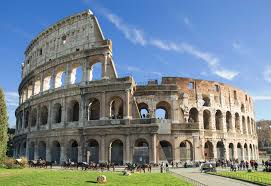

The Colosseum, is an oval amphitheatre in the centre of the city of Rome, Italy, just east of the Roman Forum and is the largest ancient amphitheatre ever built, and is still the largest standing amphitheater in the world today, despite its age. Construction began under the emperor Vespasian (r. 69–79 AD) in 72 and was completed in AD 80 under his successor and heir, Titus (r. 79–81). Further modifications were made during the reign of Domitian (r. 81–96). The three emperors that were patrons of the work are known as the Flavian dynasty, and the amphitheatre was named the Flavian Amphitheatre
The Colosseum is built of travertine limestone, tuff (volcanic rock), and brick-faced concrete. The Colosseum could hold an estimated 50,000 to 80,000 spectators at various points of its history over the centuries, having an average audience of some 65,000; it was used for gladiatorial contests and public spectacles such as mock sea battles (for only a short time as the hypogeum was soon filled in with mechanisms to support the other activities), animal hunts, executions, re-enactments of famous battles, and dramas based on Roman mythology. The building ceased to be used for entertainment in the early medieval era. It was later reused for such purposes as housing, workshops, quarters for a religious order, a fortress, a quarry, and a Christian shrine.
